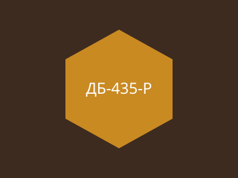
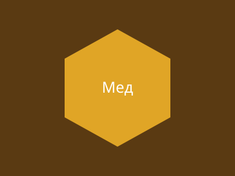
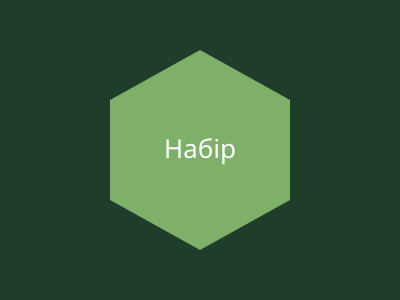

Що у нас є
Рамки, мед, дим і решта.
Рамки та вуликиМед і продукти бджільництваОбладнання для димуНабори для початківцівІнструмент

Рамка ДБ-435 ВЛ розс.
Докладніше
Рамка ДБ-435 ВЛ розс. Р
Докладніше
Мед КМ-12 зб.

Дим. апарат ДА-3 нерж.

Набір Ф-2 ДНЗ/8р